Los bosques nublados crecen en las montañas por arriba de las selvas húmedas y por debajo de los bosques templados. Como su nombre lo indica, están cubiertos de nubes gran parte del año y llueve constantemente.
Aquí viven una gran diversidad árboles con muchas epífitas, es decir plantas que creen sobre ellos sin causarles daño como las orquídeas, las bromelias y las lianas. Debido a la humedad es hogar de muchas ranas, sapos y salamandras y de gran variedad de especies muy interesantes
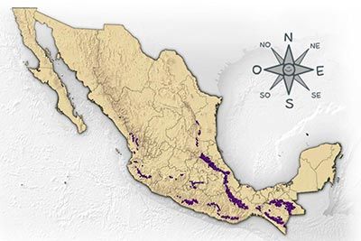
Pavón
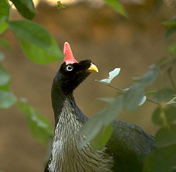
Soy una de las aves más raras de México, tanto por mi apariencia como porque soy poco abundante. Soy inconfundible ya que poseo un cuernito rojo en la cabeza, como si fuera un unicornio. Me alimento de una gran variedad de hojas y frutos. Y tanto hembras como machos somos muy platicadores.
Aracari
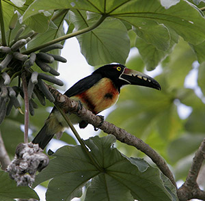
Soy un tucán de color oscuro. Me alimento de frutos carnosos pero también de vez en cuando como pollos de otras aves. Anido en troncos huecos de árboles. Soy muy sociable y generalmente ando acompañado de muchos amigos.
Bromelia
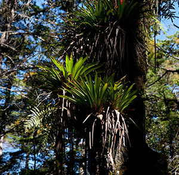
También me llaman maguey de encino o gallito. Soy una planta epífita, que vive sobre los árboles sin causarles daño. Entre mis hojas se acumula el agua de lluvia y ahí viven muchos insectos, alacranes, arañas, ranas y hasta culebras. Mis flores y frutos son de colores llamativos. La piña y el heno son mis parientes.
Nauyaca
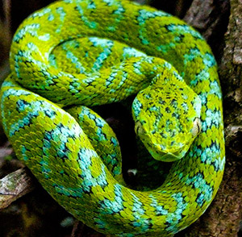
Soy una víbora de color verde y puedo medir hasta un metro de largo. Utilizo mi veneno para inmovilizar a mis presas que son pequeños mamíferos, aves y reptiles. Puedo cazarlos en el suelo o trepar a los árboles para darles un buen susto.
Tlaconete
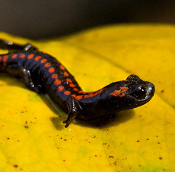
Soy un anfibio también conocido como salamandra. Soy muy pequeño y vivo escondido en el suelo, debajo de las rocas, o entre la corteza de los árboles. Me alimento de minúsculos insectos que atrapo con mi larga y viscosa lengua. Podemos ser abundantes pero nos escondemos muy bien.
Mariposa Cometa Chinanteca
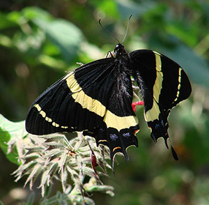
Soy una mariposa de gran tamaño y atractivos colores. Aunque me parezco a otras mariposas tengo una distribución muy restringida en los bosques nublados de la Sierra Madre Oriental. Me alimento de néctar y polinizo a las flores cuando las visito.
Quetzal
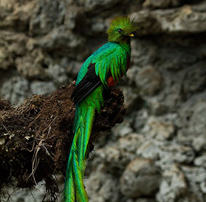
Soy una de las especies de aves más elegantes y coloridas del país. Hago mis nidos en troncos de árboles y me alimento de sus frutos. Mis extraordinarios plumas de la cola adornaban los penachos de los grandes gobernantes del México prehispánico.
Magnolia
También me conocen como “yoloxochitl” que quiere decir: flor del corazón. Soy un árbol de hasta 30 metros de altura. Mis atractivas flores blancas son de gran tamaño. Mis frutos son rojos. Algunos de mis parientes viven en las ciudades embelleciendo los parques como árboles ornamentales.
Viejo del monte
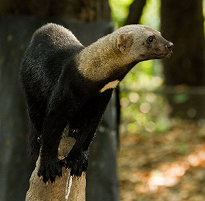
Me llaman así porque mi cabeza es canosa y mi cuerpo está cubierto de pelo negro. Soy un gran depredador de aves y mamíferos, puedo nadar y también trepar ágilmente a los árboles para alcanzar a mis presas. También me gustan algunas frutas. A veces ando solo o a veces en grupo.
Oso Hormiguero
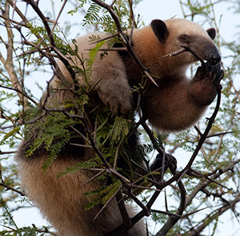
Soy del tamaño de un perro pequeño, pero mucho más bravo. También me llaman brazo fuerte ya que diariamente hago ejercicio al trepar a los árboles con mis brazos y cola prehensil. Mis grandes garras me ayudan a abrir hormigueros y termiteros para alimentarme con mi larga lengua de sabrosas hormigas y termitas.
Tigrillo
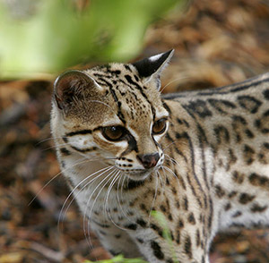
Soy el más pequeño de los gatos silvestres mexicanos. Soy nocturno, es decir, que mis actividades las realizo durante la noche. Con mis grandes ojos tengo muy buena visión nocturna. Me gusta trepar a los árboles en busca de pequeñas aves, ratones, lagartijas y ranas.
Helecho Arborescente
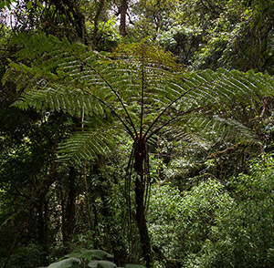
Soy una planta muy antigua que convivió con los dinosaurios. Puedo crecer hasta 10 metros de altura y semejar un gran paraguas. En algunos lugares me llaman “maquique” y utilizan mi tronco para hacer macetas, pero eso ya está prohibido porque afectaban seriamente a mi población.